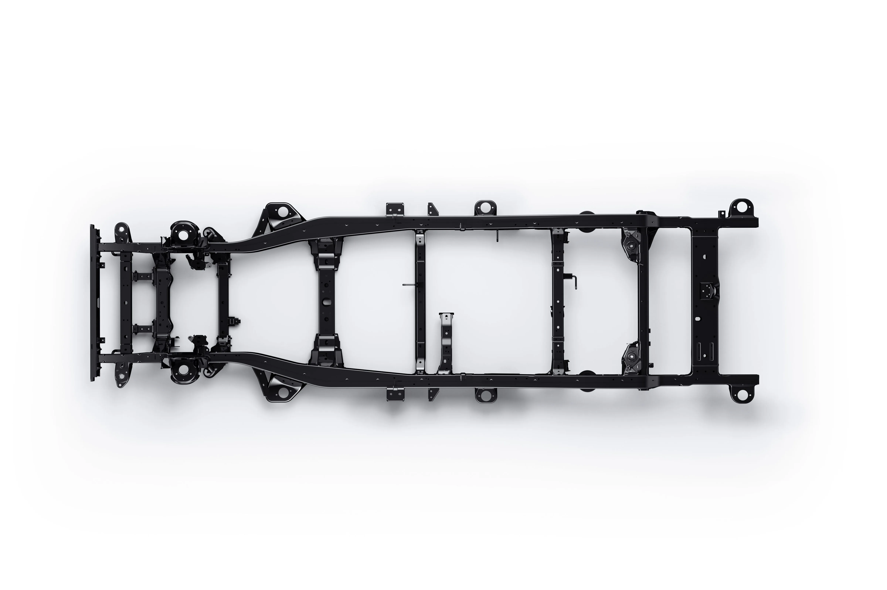

▲ 완전변경 신형 파제로 후면. 이전 세대의 상징이었던 테일게이트 외장 스페어타이어가 사라졌다 ⓒ 미쓰비시자동차
1. 무슨 일이 있었나
미쓰비시가 완전변경한 5세대 파제로에서 트렁크 문에 매달려 있던 상징적인 외장 스페어타이어를 없앴다. 대신 스페어타이어는 차체 하부, 이른바 '언더슬렁(underslung)' 방식으로 자리를 옮겼다. 파제로 하면 떠오르던 뒷문의 둥근 타이어 실루엣이 이번 세대부터는 사라진 셈이다.

▲ 완전변경 신형 파제로 전면. 트라이톤의 래더프레임을 기반으로 캐빈과 서스펜션을 새로 개발했다 ⓒ 미쓰비시자동차
2. 미쓰비시가 밝힌 이유 — "문이 무거워지고, 짐칸 접근이 불편했다"
미쓰비시 측 설명은 명확하다. 테일게이트에 타이어를 매다는 기존 방식은 뒷문 자체를 무겁게 만들고, 문을 열고 닫을 때마다 그 무게를 그대로 감당해야 했다는 것이다. 좁은 주차 공간에서는 짐칸에 접근하기 위해 무거운 문을 완전히 열어젖혀야 하는 불편함도 있었다.
4륜구동 시장 전반이 최근 몇 년 사이 조금씩 언더슬렁 방식으로 옮겨간 것도 같은 맥락이다. 좁은 공간에서의 짐칸 접근성을 높이려는 실용적 판단이 트렌드를 만들었고, 파제로도 이 흐름에 합류했다.
3. 디자인은 어떻게 바뀌었나 — 흔적은 남기다
흥미로운 지점은 미쓰비시가 이 변화를 완전히 숨기지 않았다는 점이다. 5세대 파제로의 테일게이트는 평범한 형태로 바뀌었지만, 이전 세대 스페어타이어가 만들어내던 볼록한 형상을 은근히 연상시키는 육각형 디자인 요소를 남겨뒀다. 오랜 팬들에게는 익숙한 실루엣에 대한 시각적 오마주인 셈이다.

▲ 트라이톤 기반으로 새로 설계된 래더프레임. 스페어타이어는 이 하부 구조에 언더슬렁 방식으로 장착된다 ⓒ 미쓰비시자동차
신형 파제로는 미쓰비시의 픽업트럭 트라이톤의 래더프레임을 바탕으로 캐빈과 전후 서스펜션을 별도 개발했다. 고장력 강판 적용 범위를 넓히고, 전륜 더블위시본·후륜 5링크 리지드 서스펜션을 새로 구성했다.
4. 먼저 길을 낸 프라도, 여전히 고집하는 디펜더·랭글러
외장 스페어타이어를 없애는 흐름에서 파제로가 처음은 아니다. 토요타 프라도가 최신 세대에서 먼저 언더슬렁 방식을 택했고, 파제로가 그 뒤를 이었다. 반면 랜드로버 디펜더나 지프 랭글러는 여전히 테일게이트에 스페어타이어를 매다는 방식을 브랜드 정체성으로 유지하고 있다. 오프로드 SUV 시장 안에서도 실용성과 헤리티지 중 무엇을 우선할지에 대한 판단이 갈리고 있는 셈이다.
| 모델 | 스페어타이어 위치 | 비고 |
|---|---|---|
| 신형 파제로(5세대) | 차체 하부(언더슬렁) | 이번에 전환 |
| 토요타 프라도(최신형) | 차체 하부(언더슬렁) | 먼저 전환 |
| 랜드로버 디펜더 | 테일게이트 외장 | 브랜드 정체성 유지 |
| 지프 랭글러 | 테일게이트 외장 | 브랜드 정체성 유지 |

▲ 신형 파제로 실내. 디지털 계기판과 대형 인포테인먼트 화면을 갖추면서도 핵심 기능은 물리 버튼으로 남겼다 ⓒ 미쓰비시자동차
5. 남은 변수 — 국내 출시는 아직 미정
신형 파제로는 앞서 호주 시장에서 2026년 12월 출시가 확정된 상태다. 국내 출시 여부와 시점은 아직 공식적으로 확인되지 않았다. 미쓰비시가 국내 승용 시장에서 철수한 이력이 있는 만큼, 국내 소비자 입장에서는 당장은 해외 출시 소식으로 지켜볼 수밖에 없는 상황이다.
✅ 체크포인트
· 5세대 파제로, 테일게이트 외장 스페어타이어를 차체 하부 언더슬렁 방식으로 전환
· 미쓰비시 설명: 테일게이트 무게 절감 + 좁은 공간에서의 짐칸 접근성 개선이 목적
· 테일게이트에 이전 세대를 연상시키는 육각형 디자인 요소를 남겨 디자인 정체성 유지
· 토요타 프라도가 먼저 택한 방식, 랜드로버 디펜더·지프 랭글러는 여전히 외장 방식 고수
· 호주 출시는 2026년 12월 확정, 국내 출시 여부·시점은 미정
6. 정리
완전변경한 신형 미쓰비시 파제로는 테일게이트에 매달려 있던 외장 스페어타이어를 없애고 차체 하부 언더슬렁 방식으로 전환했다. 무거운 문 개폐와 좁은 공간에서의 짐칸 접근성 문제를 해결하기 위한 실용적 선택으로, 토요타 프라도가 먼저 택한 흐름과 같다. 다만 테일게이트에 이전 세대를 연상시키는 디자인 요소를 남겨 브랜드 정체성은 놓치지 않았다. 호주 출시는 12월로 확정됐지만, 국내 출시 여부는 아직 미정이다.